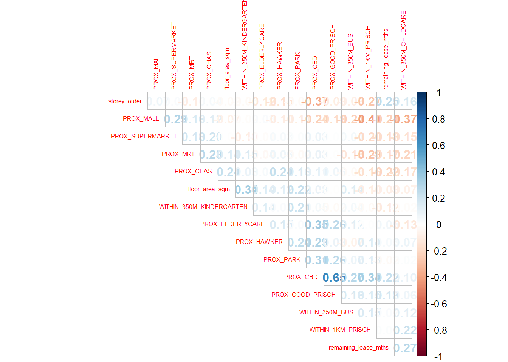
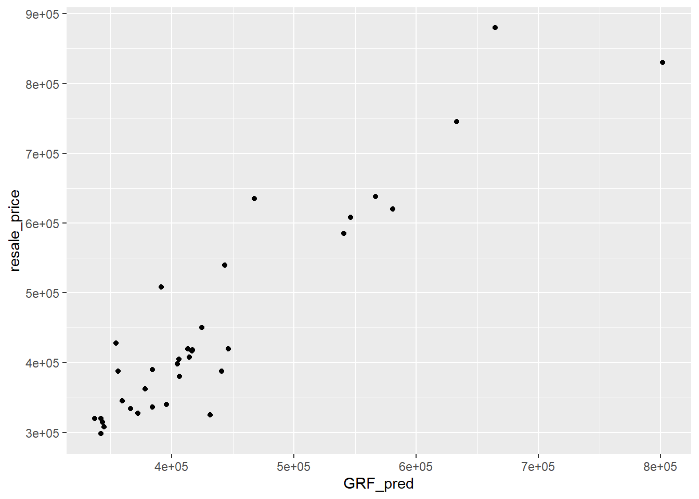

pacman::p_load(sf, spdep, GWmodel, SpatialML,
tmap, rsample, Metrics, tidyverse)Hands On Exercise 8
Geographically Weighted Predictive Models
Data Preparation
mdata <- read_rds("data/rds/mdata.rds")Reducing the number of data to 100 for faster computation
set.seed(1234)
mdata <- mdata[sample(nrow(mdata), 100, replace = TRUE), ]
write_rds(mdata, "data/rds/mdata.rds")mdata <- read_rds("data/rds/mdata.rds")Partitioning Dataset
set.seed(1234)
resale_split <- initial_split(mdata,
prop = 6.5/10,)
train_data <- training(resale_split)
test_data <- testing(resale_split)
write_rds(train_data, "data/rds/train_data.rds")
write_rds(test_data, "data/rds/test_data.rds")Computing correlation Matrix
Retrieving stored Data
train_data <- read_rds("data/rds/train_data.rds")
test_data <- read_rds("data/rds/test_data.rds")mdata_nogeo <- mdata%>%
st_drop_geometry()
corrplot::corrplot(cor(mdata_nogeo[, 2:17]),
diag = FALSE,
order = "AOE",
tl.pos = "td",
tl.cex = 0.5,
method = "number",
type = "upper")
Building a non-spatial multiple linear regression
price_mlr <- lm(resale_price ~ floor_area_sqm +
storey_order + remaining_lease_mths +
PROX_CBD + PROX_ELDERLYCARE + PROX_HAWKER +
PROX_MRT + PROX_PARK + PROX_MALL +
PROX_SUPERMARKET + WITHIN_350M_KINDERGARTEN +
WITHIN_350M_CHILDCARE + WITHIN_350M_BUS +
WITHIN_1KM_PRISCH,
data=train_data)
summary(price_mlr)
Call:
lm(formula = resale_price ~ floor_area_sqm + storey_order + remaining_lease_mths +
PROX_CBD + PROX_ELDERLYCARE + PROX_HAWKER + PROX_MRT + PROX_PARK +
PROX_MALL + PROX_SUPERMARKET + WITHIN_350M_KINDERGARTEN +
WITHIN_350M_CHILDCARE + WITHIN_350M_BUS + WITHIN_1KM_PRISCH,
data = train_data)
Residuals:
Min 1Q Median 3Q Max
-142024 -41569 4155 48792 110986
Coefficients:
Estimate Std. Error t value Pr(>|t|)
(Intercept) 142126.48 153078.73 0.928 0.3576
floor_area_sqm 2194.98 1310.48 1.675 0.1002
storey_order 20719.95 4397.98 4.711 2.00e-05 ***
remaining_lease_mths 339.77 71.58 4.747 1.77e-05 ***
PROX_CBD -16109.46 2969.03 -5.426 1.68e-06 ***
PROX_ELDERLYCARE -19600.23 13544.34 -1.447 0.1541
PROX_HAWKER -2953.48 17348.03 -0.170 0.8655
PROX_MRT -7089.48 23403.86 -0.303 0.7632
PROX_PARK -35240.84 21712.60 -1.623 0.1109
PROX_MALL -27060.78 34831.45 -0.777 0.4409
PROX_SUPERMARKET -13410.05 68312.85 -0.196 0.8452
WITHIN_350M_KINDERGARTEN 16416.09 11064.43 1.484 0.1442
WITHIN_350M_CHILDCARE 3602.03 5529.58 0.651 0.5178
WITHIN_350M_BUS -2047.67 3423.83 -0.598 0.5525
WITHIN_1KM_PRISCH -12473.83 7128.02 -1.750 0.0863 .
---
Signif. codes: 0 '***' 0.001 '**' 0.01 '*' 0.05 '.' 0.1 ' ' 1
Residual standard error: 64380 on 50 degrees of freedom
Multiple R-squared: 0.8085, Adjusted R-squared: 0.7549
F-statistic: 15.08 on 14 and 50 DF, p-value: 2.466e-13write_rds(price_mlr, "data/rds/price_mlr.rds" ) gwr predictive method
train_data_sp <- as_Spatial(train_data)
train_data_spComputing adaptive bandwidth
bw_adaptive <- bw.gwr(resale_price ~ floor_area_sqm +
storey_order + remaining_lease_mths +
PROX_CBD + PROX_ELDERLYCARE + PROX_HAWKER +
PROX_MRT + PROX_PARK + PROX_MALL +
PROX_SUPERMARKET + WITHIN_350M_KINDERGARTEN +
WITHIN_350M_CHILDCARE + WITHIN_350M_BUS +
WITHIN_1KM_PRISCH,
data=train_data_sp,
approach="CV",
kernel="gaussian",
adaptive=TRUE,
longlat=FALSE)Writing to rds folder so it will not need ot be re-run
write_rds(bw_adaptive, "data/rds/bw_adaptive.rds")bw_adaptive <- read_rds("data/rds/bw_adaptive.rds")Constructing the adaptive bandwidth gwr model
gwr_adaptive <- gwr.basic(formula = resale_price ~
floor_area_sqm + storey_order +
remaining_lease_mths + PROX_CBD +
PROX_ELDERLYCARE + PROX_HAWKER +
PROX_MRT + PROX_PARK + PROX_MALL +
PROX_SUPERMARKET + WITHIN_350M_KINDERGARTEN +
WITHIN_350M_CHILDCARE + WITHIN_350M_BUS +
WITHIN_1KM_PRISCH,
data=train_data_sp,
bw=bw_adaptive,
kernel = 'gaussian',
adaptive=TRUE,
longlat = FALSE)
write_rds(gwr_adaptive, "data/rds/gwr_adaptive.rds") gwr_adaptive <- read_rds("data/rds/gwr_adaptive.rds")
gwr_adaptive ***********************************************************************
* Package GWmodel *
***********************************************************************
Program starts at: 2024-11-10 22:25:38.686551
Call:
gwr.basic(formula = resale_price ~ floor_area_sqm + storey_order +
remaining_lease_mths + PROX_CBD + PROX_ELDERLYCARE + PROX_HAWKER +
PROX_MRT + PROX_PARK + PROX_MALL + PROX_SUPERMARKET + WITHIN_350M_KINDERGARTEN +
WITHIN_350M_CHILDCARE + WITHIN_350M_BUS + WITHIN_1KM_PRISCH,
data = train_data_sp, bw = bw_adaptive, kernel = "gaussian",
adaptive = TRUE, longlat = FALSE)
Dependent (y) variable: resale_price
Independent variables: floor_area_sqm storey_order remaining_lease_mths PROX_CBD PROX_ELDERLYCARE PROX_HAWKER PROX_MRT PROX_PARK PROX_MALL PROX_SUPERMARKET WITHIN_350M_KINDERGARTEN WITHIN_350M_CHILDCARE WITHIN_350M_BUS WITHIN_1KM_PRISCH
Number of data points: 65
***********************************************************************
* Results of Global Regression *
***********************************************************************
Call:
lm(formula = formula, data = data)
Residuals:
Min 1Q Median 3Q Max
-142024 -41569 4155 48792 110986
Coefficients:
Estimate Std. Error t value Pr(>|t|)
(Intercept) 142126.48 153078.73 0.928 0.3576
floor_area_sqm 2194.98 1310.48 1.675 0.1002
storey_order 20719.95 4397.98 4.711 2.00e-05 ***
remaining_lease_mths 339.77 71.58 4.747 1.77e-05 ***
PROX_CBD -16109.46 2969.03 -5.426 1.68e-06 ***
PROX_ELDERLYCARE -19600.23 13544.34 -1.447 0.1541
PROX_HAWKER -2953.48 17348.03 -0.170 0.8655
PROX_MRT -7089.48 23403.86 -0.303 0.7632
PROX_PARK -35240.84 21712.60 -1.623 0.1109
PROX_MALL -27060.78 34831.45 -0.777 0.4409
PROX_SUPERMARKET -13410.05 68312.85 -0.196 0.8452
WITHIN_350M_KINDERGARTEN 16416.09 11064.43 1.484 0.1442
WITHIN_350M_CHILDCARE 3602.03 5529.58 0.651 0.5178
WITHIN_350M_BUS -2047.67 3423.83 -0.598 0.5525
WITHIN_1KM_PRISCH -12473.83 7128.02 -1.750 0.0863 .
---Significance stars
Signif. codes: 0 '***' 0.001 '**' 0.01 '*' 0.05 '.' 0.1 ' ' 1
Residual standard error: 64380 on 50 degrees of freedom
Multiple R-squared: 0.8085
Adjusted R-squared: 0.7549
F-statistic: 15.08 on 14 and 50 DF, p-value: 2.466e-13
***Extra Diagnostic information
Residual sum of squares: 2.07229e+11
Sigma(hat): 57352.84
AIC: 1638.838
AICc: 1650.171
BIC: 1675.418
***********************************************************************
* Results of Geographically Weighted Regression *
***********************************************************************
*********************Model calibration information*********************
Kernel function: gaussian
Adaptive bandwidth: 19 (number of nearest neighbours)
Regression points: the same locations as observations are used.
Distance metric: Euclidean distance metric is used.
****************Summary of GWR coefficient estimates:******************
Min. 1st Qu. Median 3rd Qu.
Intercept -277478.664 -87784.921 81526.728 126224.625
floor_area_sqm 1119.948 1855.358 3404.630 5568.136
storey_order 9976.488 12038.142 14280.456 19736.366
remaining_lease_mths 162.956 196.692 291.226 357.415
PROX_CBD -18500.594 -17423.054 -14150.912 -10169.474
PROX_ELDERLYCARE -39124.442 -25248.802 -20521.387 -13394.058
PROX_HAWKER -8787.233 -4548.600 1357.056 11796.150
PROX_MRT -76256.152 -51450.829 -23020.549 -3172.203
PROX_PARK -109521.544 -70799.634 -43483.645 -28401.408
PROX_MALL -45980.372 -16254.642 74.766 56402.868
PROX_SUPERMARKET -210177.019 -168873.060 -61798.975 669.916
WITHIN_350M_KINDERGARTEN 4062.545 8665.901 10363.685 15656.314
WITHIN_350M_CHILDCARE 2343.150 3546.930 3976.271 4856.170
WITHIN_350M_BUS -3621.060 -1738.696 -1500.701 116.094
WITHIN_1KM_PRISCH -13921.461 -13312.692 -11309.094 -9901.745
Max.
Intercept 216991.76
floor_area_sqm 6826.71
storey_order 21781.08
remaining_lease_mths 420.24
PROX_CBD -4425.57
PROX_ELDERLYCARE -8564.56
PROX_HAWKER 20743.07
PROX_MRT 6247.34
PROX_PARK -17873.18
PROX_MALL 129409.07
PROX_SUPERMARKET 35068.65
WITHIN_350M_KINDERGARTEN 20872.19
WITHIN_350M_CHILDCARE 7606.44
WITHIN_350M_BUS 2754.42
WITHIN_1KM_PRISCH -6472.85
************************Diagnostic information*************************
Number of data points: 65
Effective number of parameters (2trace(S) - trace(S'S)): 34.12838
Effective degrees of freedom (n-2trace(S) + trace(S'S)): 30.87162
AICc (GWR book, Fotheringham, et al. 2002, p. 61, eq 2.33): 1668.067
AIC (GWR book, Fotheringham, et al. 2002,GWR p. 96, eq. 4.22): 1586.359
BIC (GWR book, Fotheringham, et al. 2002,GWR p. 61, eq. 2.34): 1611.322
Residual sum of squares: 97784295934
R-square value: 0.9096332
Adjusted R-square value: 0.806389
***********************************************************************
Program stops at: 2024-11-10 22:25:38.799084 Converting the test data from sf data.frame to SpatialPointDataFrame
test_data_sp <- test_data %>%
as_Spatial()
test_data_spgwr_bw_test_adaptive <- bw.gwr(resale_price ~ floor_area_sqm +
storey_order + remaining_lease_mths +
PROX_CBD + PROX_ELDERLYCARE + PROX_HAWKER +
PROX_MRT + PROX_PARK + PROX_MALL +
PROX_SUPERMARKET + WITHIN_350M_KINDERGARTEN +
WITHIN_350M_CHILDCARE + WITHIN_350M_BUS +
WITHIN_1KM_PRISCH,
data=test_data_sp,
approach="CV",
kernel="gaussian",
adaptive=TRUE,
longlat=FALSE)The result shows that 34 neighbour points will be the optimal bandwidth for the test data. We will use the optimal data for the bandwidth.
write_rds(gwr_bw_test_adaptive, "data/rds/gwr_bw_test_adaptive.rds")gwr_bw_test_adaptive <- read_rds("data/rds/gwr_bw_test_adaptive.rds")14.8.7 Computing predicted values of the test data
gwr_pred <- gwr.predict(formula = resale_price ~
floor_area_sqm + storey_order +
remaining_lease_mths + PROX_CBD +
PROX_ELDERLYCARE + PROX_HAWKER +
PROX_MRT + PROX_PARK + PROX_MALL +
PROX_SUPERMARKET +WITHIN_350M_KINDERGARTEN +
WITHIN_350M_CHILDCARE + WITHIN_350M_BUS +
WITHIN_1KM_PRISCH,
data=train_data_sp,
predictdata = test_data_sp,
bw=25,
kernel = 'gaussian',
adaptive=TRUE,
longlat = FALSE)write_rds(gwr_pred, "data/rds/gwr_pred.rds")gwr_prede <- read_rds("data/rds/gwr_pred.rds")Preparing coordinates data
coords <- st_coordinates(mdata)
coords_train <- st_coordinates(train_data)
coords_test <- st_coordinates(test_data)coords_train <- write_rds(coords_train, "data/rds/coords_train.rds" )
coords_test <- write_rds(coords_test, "data/rds/oords_test.rds" )train_data <- train_data %>%
st_drop_geometry()Calibrating Random Forest Model
set.seed(1234)
rf <- ranger(resale_price ~ floor_area_sqm + storey_order +
remaining_lease_mths + PROX_CBD + PROX_ELDERLYCARE +
PROX_HAWKER + PROX_MRT + PROX_PARK + PROX_MALL +
PROX_SUPERMARKET + WITHIN_350M_KINDERGARTEN +
WITHIN_350M_CHILDCARE + WITHIN_350M_BUS +
WITHIN_1KM_PRISCH,
data=train_data)
write_rds(rf, "data/rds/rf.rds")rf <- read_rds("data/rds/rf.rds")
rfRanger result
Call:
ranger(resale_price ~ floor_area_sqm + storey_order + remaining_lease_mths + PROX_CBD + PROX_ELDERLYCARE + PROX_HAWKER + PROX_MRT + PROX_PARK + PROX_MALL + PROX_SUPERMARKET + WITHIN_350M_KINDERGARTEN + WITHIN_350M_CHILDCARE + WITHIN_350M_BUS + WITHIN_1KM_PRISCH, data = train_data)
Type: Regression
Number of trees: 500
Sample size: 65
Number of independent variables: 14
Mtry: 3
Target node size: 5
Variable importance mode: none
Splitrule: variance
OOB prediction error (MSE): 10414167648
R squared (OOB): 0.3840517 set.seed(1234)
gwRF_adaptive <- grf(formula = resale_price ~ floor_area_sqm + storey_order +
remaining_lease_mths + PROX_CBD + PROX_ELDERLYCARE +
PROX_HAWKER + PROX_MRT + PROX_PARK + PROX_MALL +
PROX_SUPERMARKET + WITHIN_350M_KINDERGARTEN +
WITHIN_350M_CHILDCARE + WITHIN_350M_BUS +
WITHIN_1KM_PRISCH,
dframe=train_data,
bw=55,
kernel="adaptive",
coords=coords_train)write_rds(gwRF_adaptive, "data/rds/gwRF_adaptive.rds")gwRF_adaptive <- read_rds("data/rds/gwRF_adaptive.rds")test_data <- cbind(test_data, coords_test) %>%
st_drop_geometry()Predicting with test data
gwRF_pred <- predict.grf(gwRF_adaptive,
test_data,
x.var.name="X",
y.var.name="Y",
local.w=1,
global.w=0)
write_rds(gwRF_pred, "data/rds/gwRF_pred.rds")GRF_pred <- read_rds("data/rds/gwRF_pred.rds")
GRF_pred_df <- as.data.frame(GRF_pred)
test_data_p <- cbind(test_data, GRF_pred_df)
write_rds(test_data_p, "data/rds/test_data_p.rds")Calculating Root Mean Square Error
rmse(test_data_p$resale_price,
test_data_p$GRF_pred)[1] 67571.46Visualising the predicted values
ggplot(data = test_data_p,
aes(x = GRF_pred,
y = resale_price)) +
geom_point()